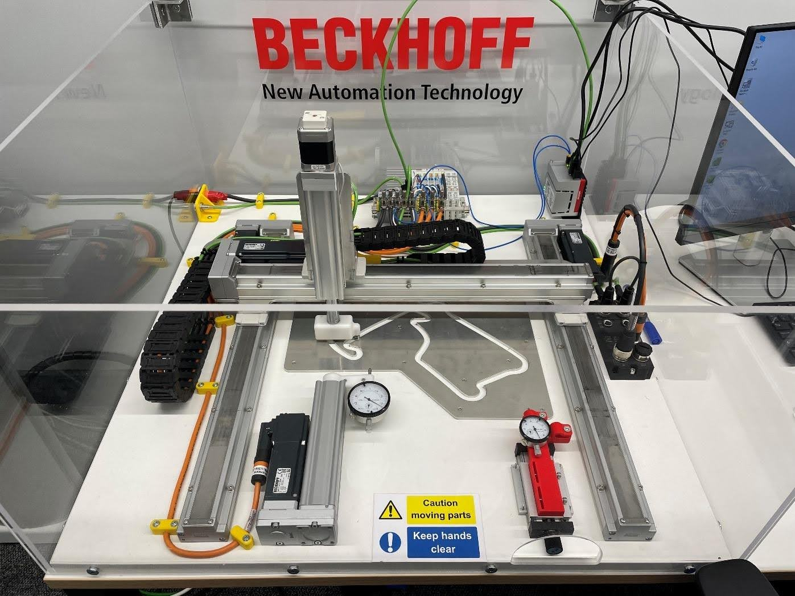
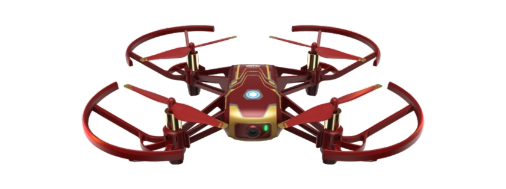
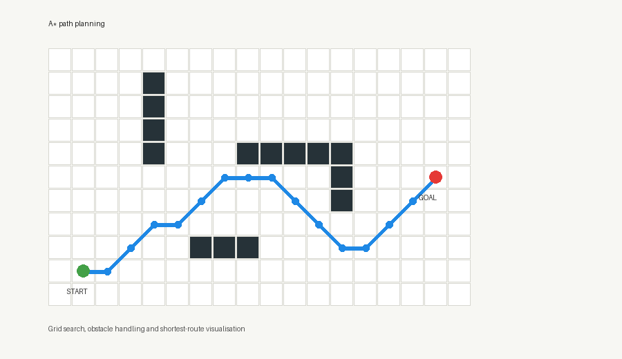
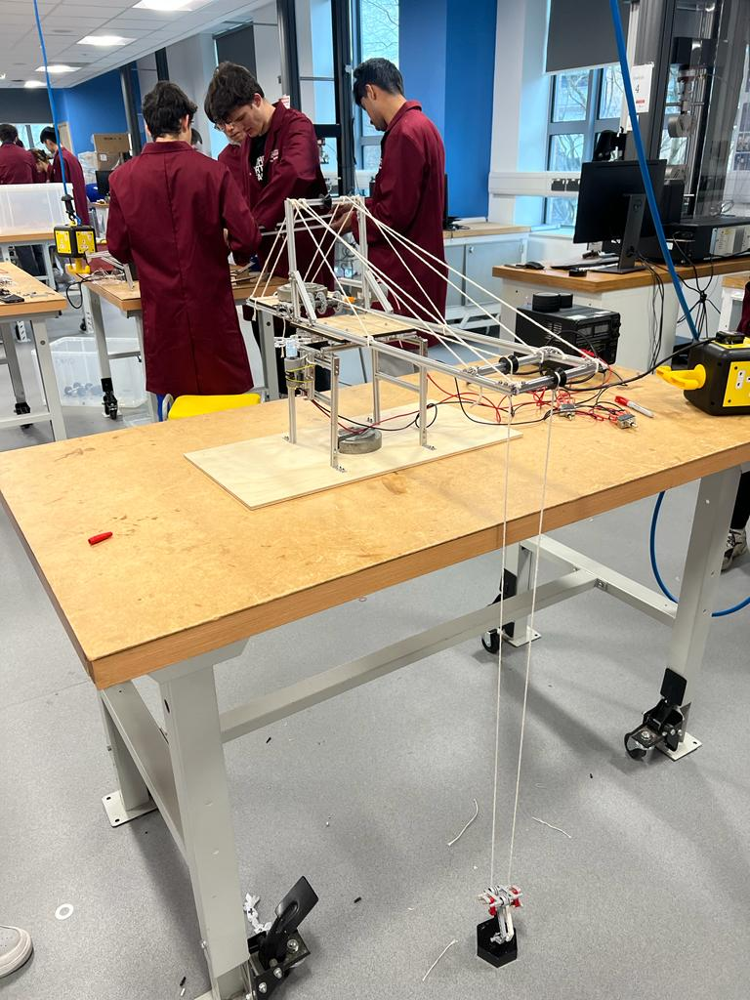
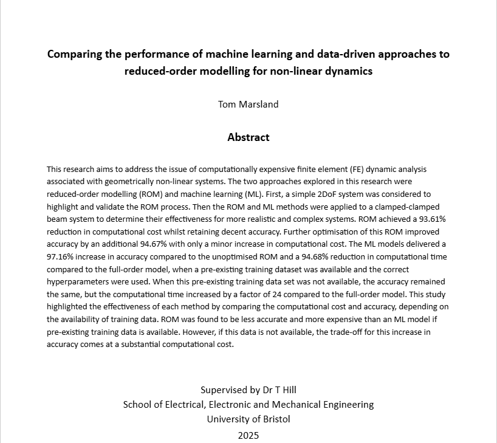
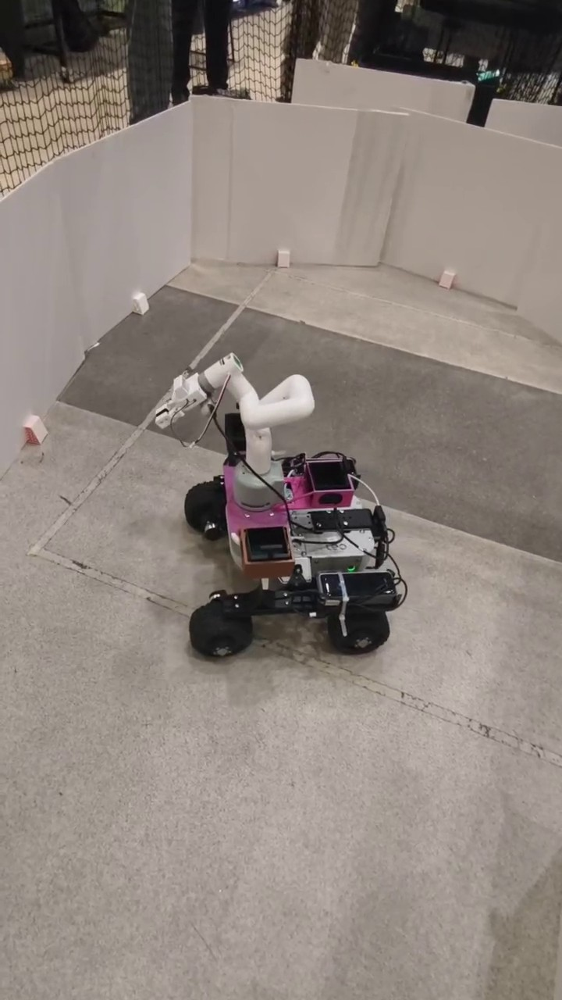
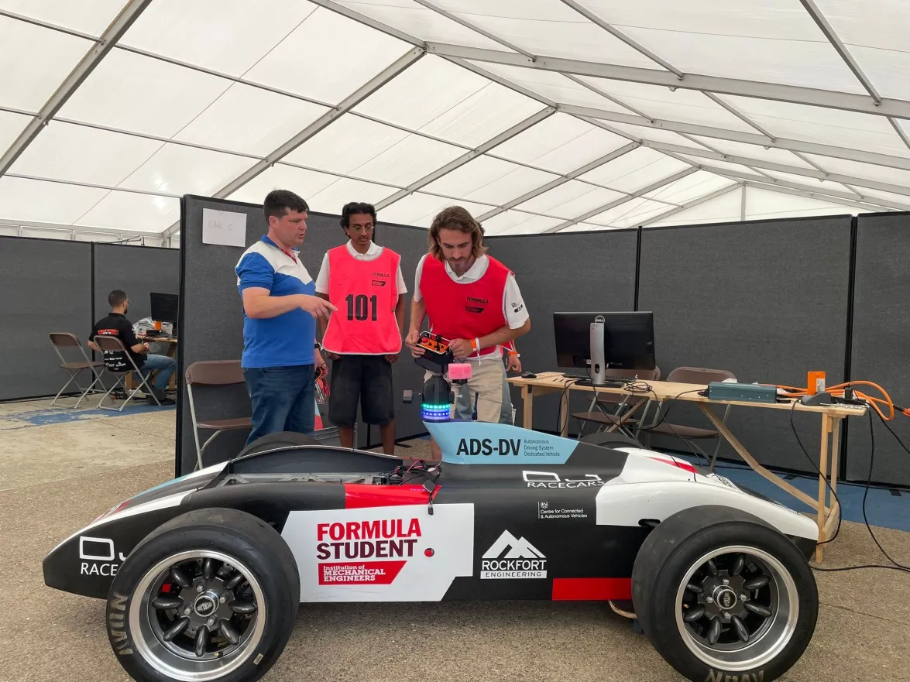
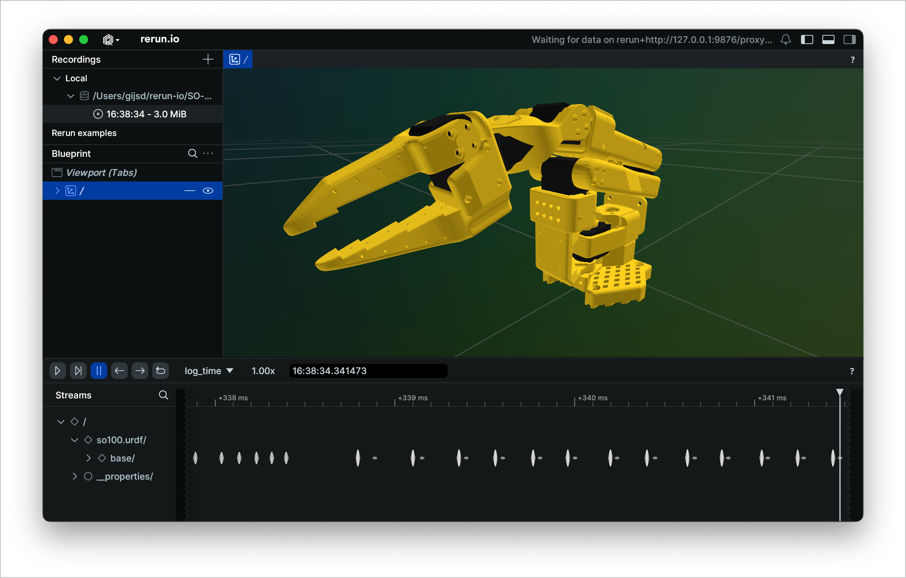

I am a postgraduate Robotics student at the University of Manchester, with an undergraduate degree in Mechanical Engineering from the University of Bristol. I build software-enabled engineering systems across control, automation, computer vision, data-driven modelling and practical mechanical design. My strongest work is in turning ambiguous technical problems into reliable, tested and explainable solutions.
I am interested in roles where rigorous analysis, clear communication and hands-on engineering judgement matter. My long-term goal is to grow into leading technical initiatives, bringing people, ideas and engineering decisions together to deliver useful systems. This portfolio highlights projects that combine coding, modelling, robotics and practical delivery.
Selected Projects
Beckhoff Automation

Beckhoff Automation - Main Project
Developed a CNC-style motion demonstration using Beckhoff hardware and TwinCAT. I adapted the NCI control code to trace the Silverstone path, designed the HMI for control and monitoring, added 3D visualisation, and integrated EtherCAT diagnostics for real-time system feedback.
Beckhoff Automation - Side Projects
- Office Monitoring: PLC program with door sensors for out-of-hours security.
- XTS Demo: Assisted in designing and editing the XTS demo state machine.
- 3D-Printed Attachments: 3D printed components for XTS/XPlanar demos.
- Energy Monitoring: Logged voltage/current using TwinCAT analytics for system tracking.
- Customer Engagement: Presented projects to engineering teams and customers.
University Projects

Built and tested a working controller for a DJI Tello drone. I wrote the control logic, mapped keyboard commands to movement, and tested take-off, landing and directional movement to strengthen my Python and real-time control skills.

Implemented grid-based path planning for an autonomous mobile robot. I built the A* search logic, used a Euclidean-distance heuristic, handled obstacles and start/end points, and connected the algorithm to a PyQt GUI for visual testing.

Principles of Mechanical Engineering Project
Designed and built a mechanical system to move an object over an obstacle. I worked in a team through concept generation, prototyping, testing and final build, contributing to both the design process and practical implementation.

Research - Reduced-Order Modelling for Non-Linear Dynamics
Compared reduced-order modelling methods for non-linear dynamic systems with machine learning approaches. I reviewed the existing techniques, carried out the comparison, and wrote the final report explaining the strengths and limits of each approach.

Leo Rover Autonomous Robot Project
Built a Leo Rover system to autonomously navigate an arena and place blocks into a bin. I contributed to mechanical assembly, learned the software and control systems during the project, helped integrate sensors, and supported troubleshooting when robot behaviour differed from the plan.

Formula Student AI - Bristol
Designed, built and programmed an autonomous robot for the Formula Student AI competition. I worked with a multidisciplinary team on robotics, sensor integration and control, helping the system reach competition-ready functionality.
Personal Projects

Developed a computer vision pipeline to track football players from match footage and extract useful movement information. I used Kaggle data for testing and added overlays for player tracking, movement and team possession analysis.

Built an image classifier for handwritten digits. I preprocessed the MNIST data, trained a convolutional neural network, adjusted the model structure, and evaluated its accuracy on the test set.
In Progress
Developing a reinforcement learning agent for Connect Four to practise training loops, reward design and game-state evaluation. The current version includes the game environment, game logic and a DQN training script, with further work planned on tuning and evaluation.

SO-ARM100 Robotic Manipulator
Planning and building a small robotic manipulator based around the SO-ARM100 open robotic arm. The work is focused on CAD, mechanical assembly, actuation and basic arm control before moving on to more advanced manipulation tasks. Reference model: TheRobotStudio/SO-ARM100.
Technical Skills
- Python
- PyTorch
- MATLAB
- ROS
- Autodesk Fusion
- Machine Learning
- Computer Vision
- TwinCAT
- Abaqus CAE
- Linux (Ubuntu)
- Raspberry Pi
- Arduino
Personal Attributes
- Strong work ethic
- Time management
- Discipline
- Resilience
- Teamwork
- Collaboration
- Problem solving
- Adaptability
- Leadership
- Project management
Get In Touch
Feel free to say hi, ask any questions, or get in touch with me. I check messages daily.


{kind=link}
{kind=link}
{kind=link}
{kind=link}
{kind=link}
{kind=link}